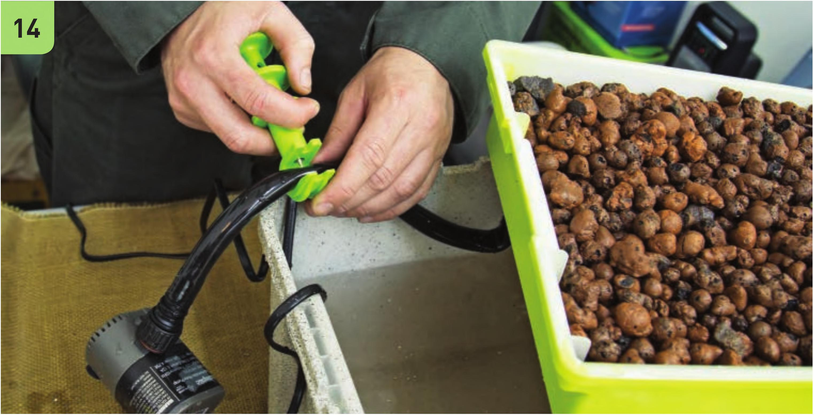
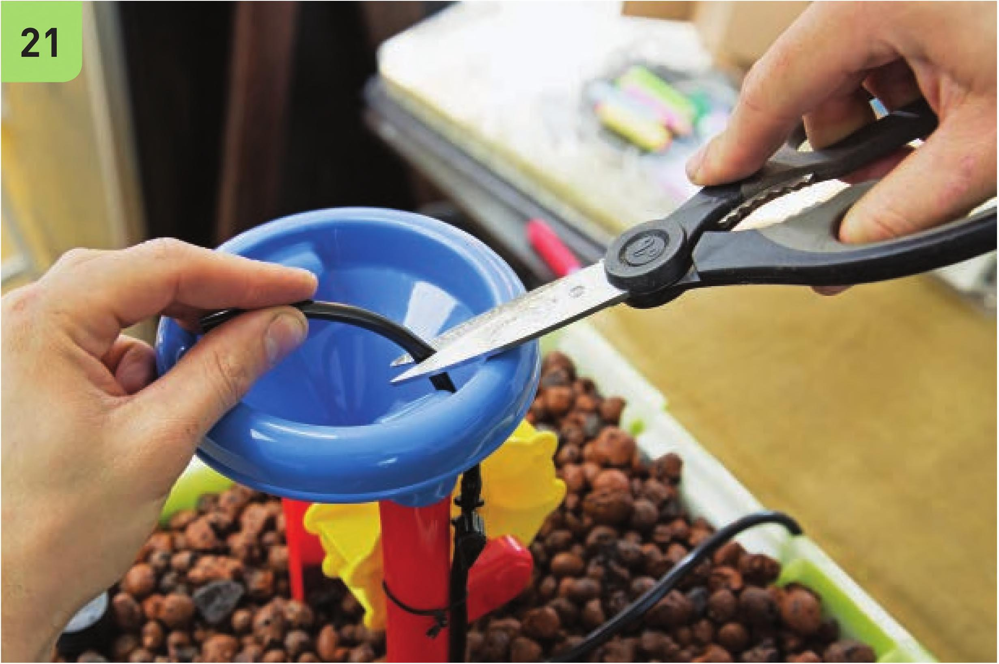
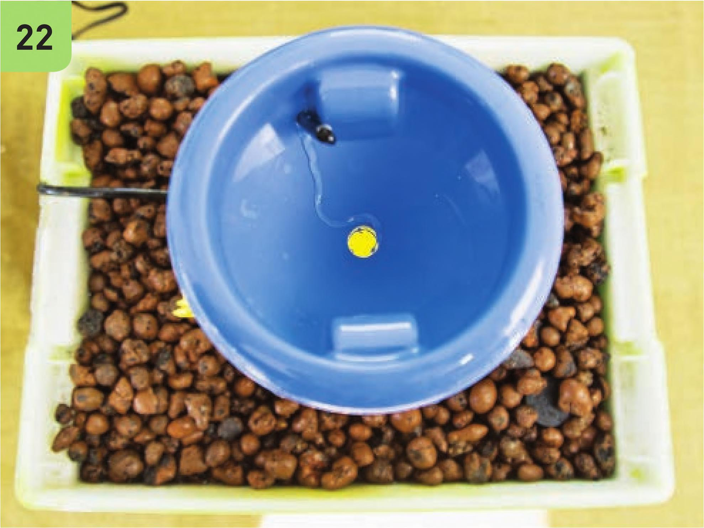

21 Connect the remaining VC vinyl tubing to the shutoff valve and string it through the VC hole in the waterwheel funnel. Cut off the excess tubing. 22 Tu rn on the pump to test the waterwheel. Adjust the shutoff valve until water flows to the waterwheel. Make sure the pump intake is set to fully open for maximum flow. HYDROPONIC GROWING SYSTEMS 97


